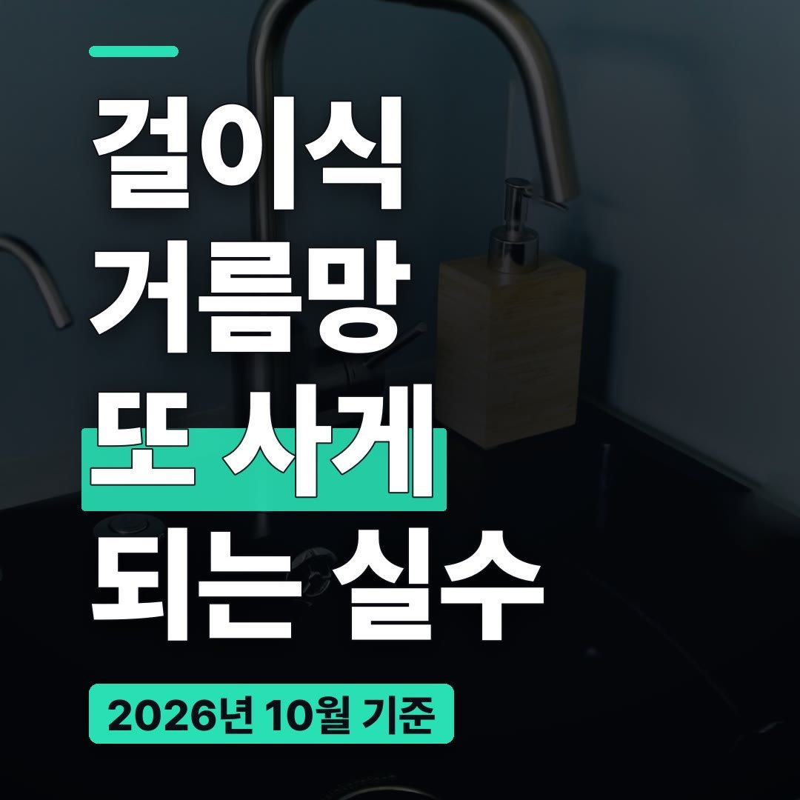
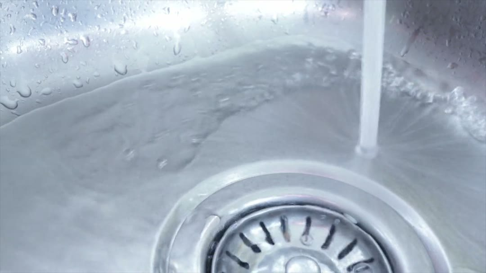
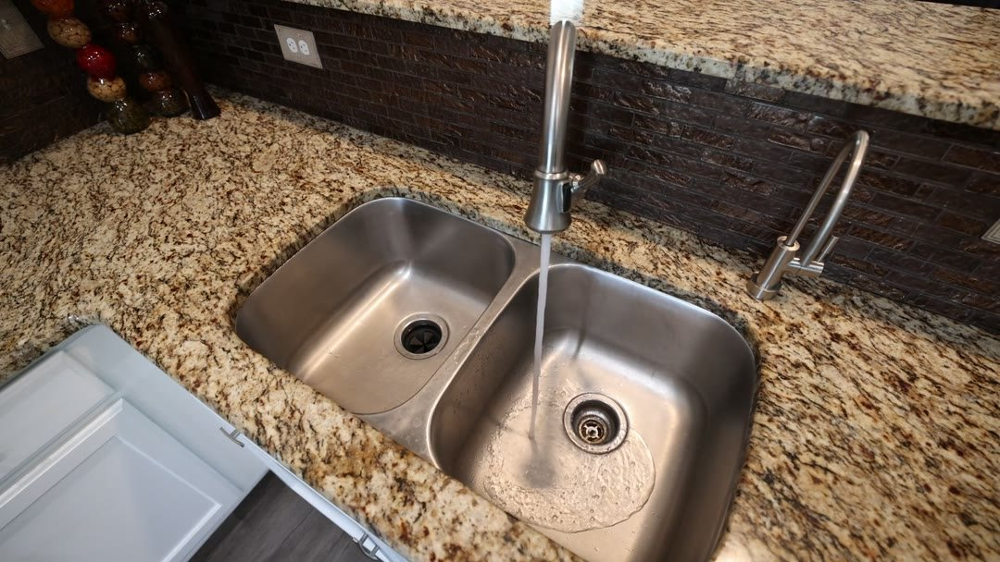
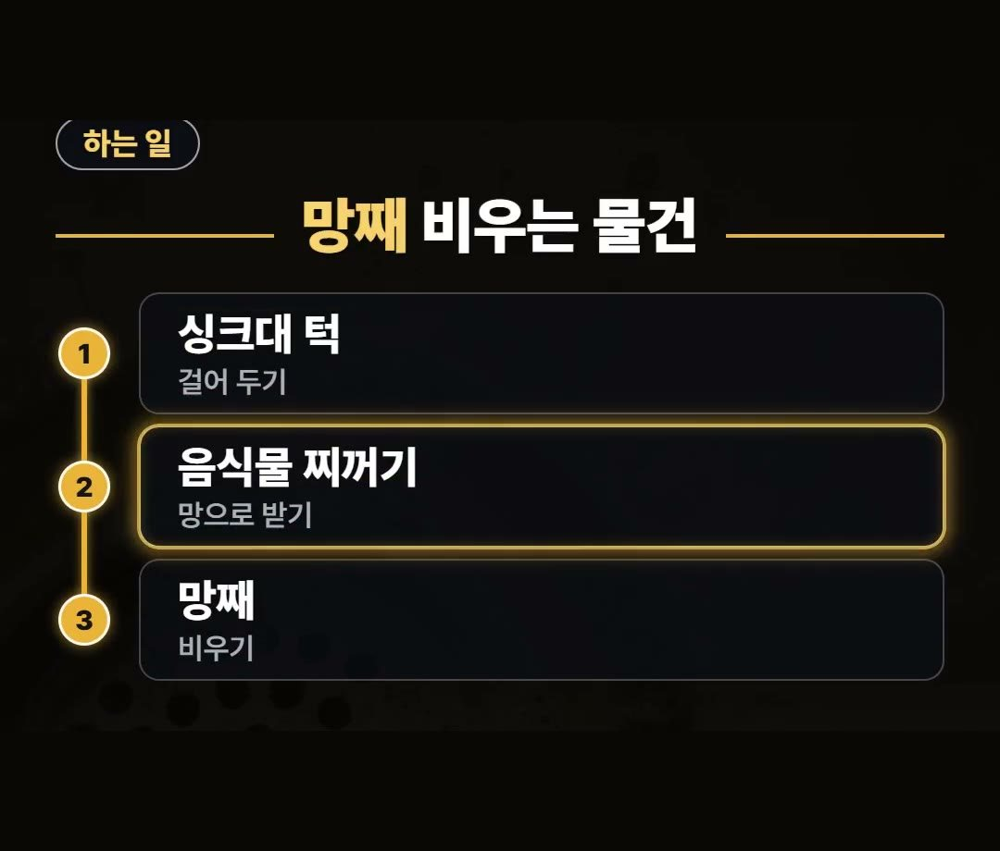
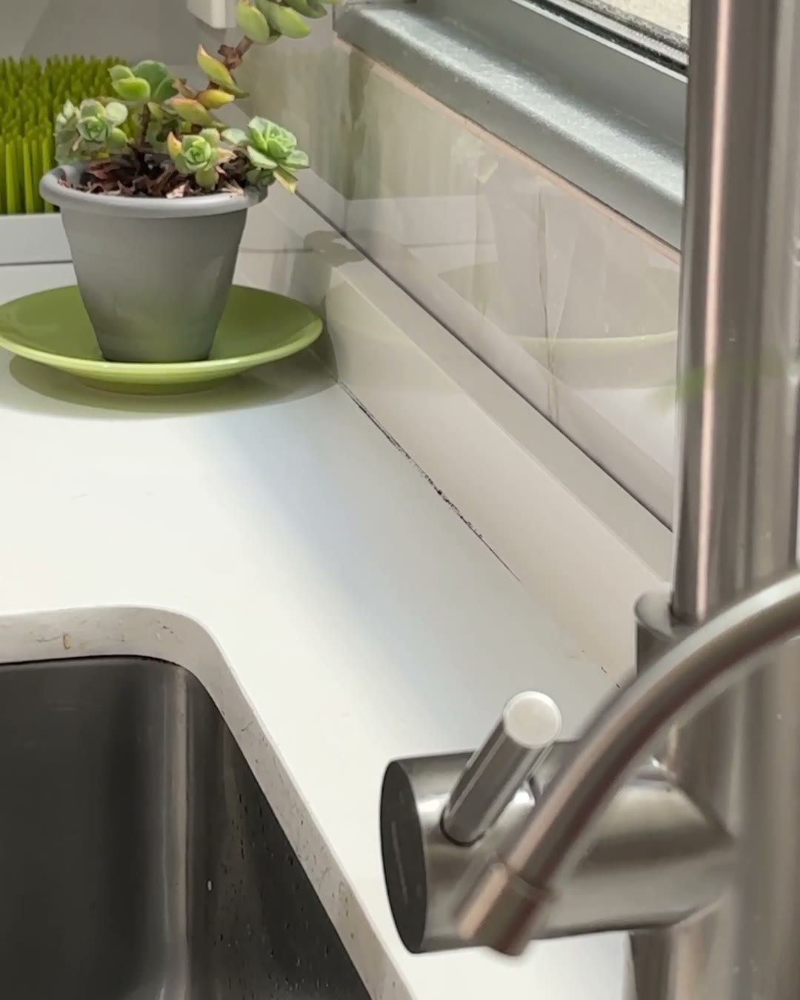
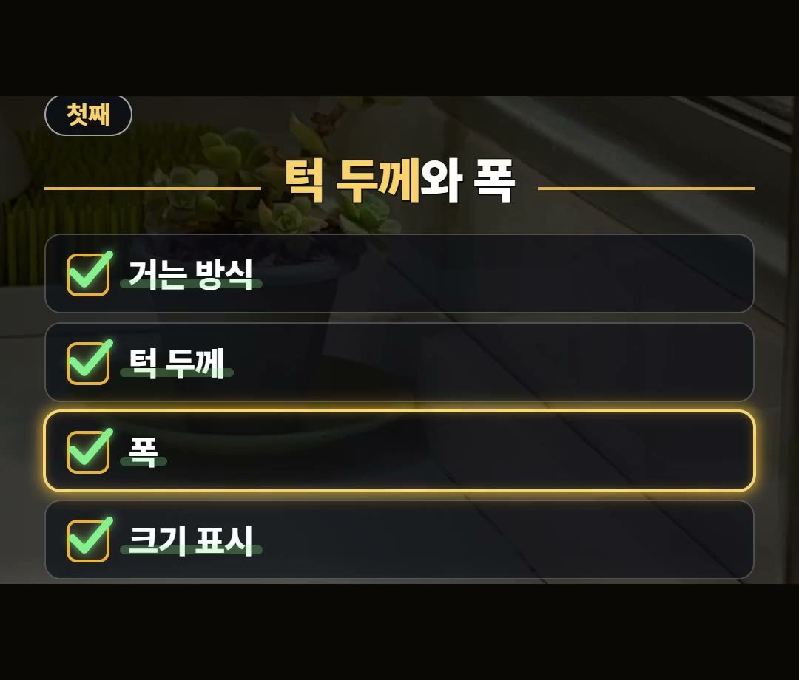
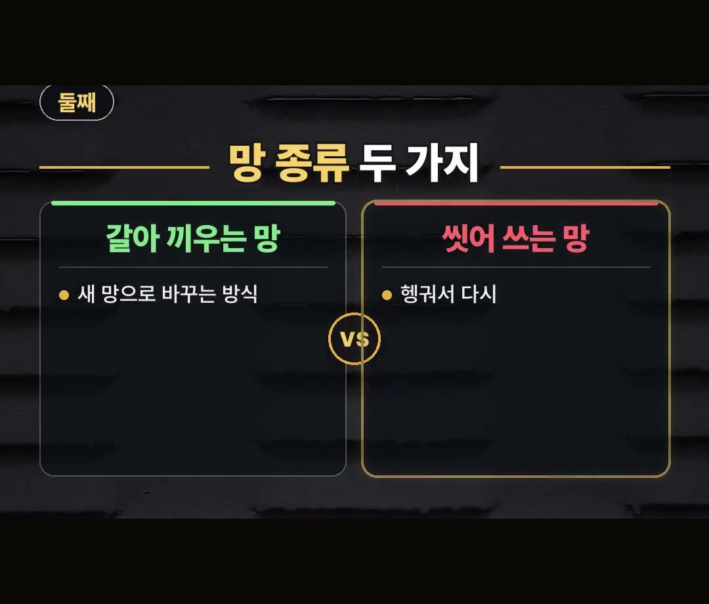
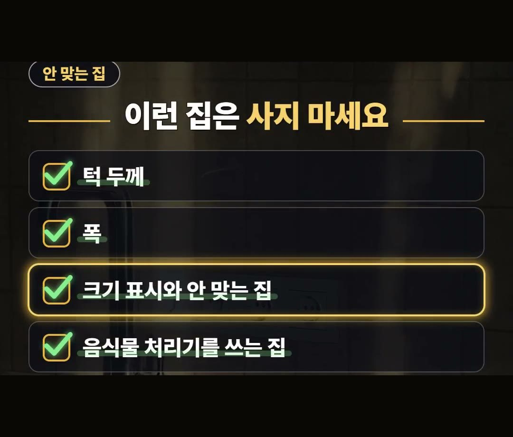

싱크대 걸이식 거름망, 턱 두께 안 맞으면 다시 삽니다
※ 이 글에는 제휴 링크가 포함되어 있으며, 링크를 통해 구매하시면 일정 수수료를 받을 수 있습니다. (가격은 같습니다)
※ 이 포스팅은 쿠팡 파트너스 활동의 일환으로, 이에 따른 일정액의 수수료를 제공받습니다.

싱크대 걸이식 거름망을 사기 전에 먼저 볼 것은 우리 집 싱크대의 턱 두께와 폭입니다.
턱 두께를 모르고 사면 걸리지 않아서 거름망을 또 사게 될 수 있습니다.
이 글은 써 보고 쓴 후기가 아니라, 사기 전에 볼 기준 2가지와 맞지 않는 집을 정리한 글이에요.
걸이식 거름망이 어떤 일을 하는 물건인지부터 차례로 적어 두었습니다.
싱크대 턱 두께와 폭을 먼저 재고, 상품의 크기 표시와 맞는지 보세요.
망 종류 2가지도 견줘 보고 손이 덜 가는 쪽으로 고르면 돼요! 💡
배수구 거름망 비우기가 번거로운 까닭
배수구 거름망을 비울 때마다 손 넣기가 싫을 때가 있습니다.
음식물 찌꺼기가 배수구 안쪽 깊은 곳에 모이기 때문입니다.

비우려면 그 깊은 곳까지 손을 넣어야 해서 번거롭게 느껴집니다.
걸이식 거름망은 이 번거로움 때문에 찾게 되는 물건입니다.
다만 아무 집에나 맞는 물건은 아니어서, 사기 전에 볼 것이 몇 가지 있습니다.
싱크대 걸이식 거름망이 하는 일

싱크대 걸이식 거름망은 싱크대 턱에 걸어 두는 물건입니다.
음식물 찌꺼기를 망으로 받아서 망째 비우도록 나왔습니다.
- 싱크대 턱에 걸어 두기
- 음식물 찌꺼기를 망으로 받기
- 망째 비우기

하는 일은 단순합니다.
턱에 걸어 두고, 망으로 받고, 망째 비우는 세 가지입니다.
살 때 볼 기준 첫째, 턱 두께와 폭
살 때는 2가지를 보면 됩니다.
첫째는 거는 방식입니다.

우리 집 싱크대 턱 두께와 폭이 상품의 크기 표시와 맞아야 걸립니다.
안 맞으면 다시 사야 합니다.
그래서 사기 전에 먼저 재는 것이 순서입니다.
- 거는 방식
- 턱 두께
- 폭
- 상품의 크기 표시

잰 값을 적어 두고 상품의 크기 표시와 나란히 놓고 보면 됩니다.
턱 두께와 폭 가운데 하나만 맞는 것이 아니라 둘 다 크기 표시와 맞는지 보세요.
살 때 볼 기준 둘째, 망 종류 2가지
둘째는 망 종류입니다.
- 갈아 끼우는 망: 쓰고 나서 새 망으로 바꾸는 방식
- 씻어 쓰는 망: 헹궈서 다시 쓰는 방식

어느 쪽이 낫다고 정해진 것은 아닙니다.
두 방식을 견줘 보고 우리 집에서 손이 덜 가는 쪽으로 고르면 됩니다.
어느 방식인지는 상품 설명에서 먼저 확인해 보세요.
이런 집이면 사지 마세요
아래와 같은 집이면 사지 않는 편이 낫습니다.
- 턱 두께나 폭이 크기 표시와 안 맞는 집
- 음식물 처리기를 쓰는 집

턱 두께나 폭이 크기 표시와 안 맞는 집이면 사지 마세요.
크기가 맞아야 걸리는 물건이기 때문입니다.
음식물 처리기를 쓰는 집도 쓸 일이 적습니다.
반대로 배수구에 손 넣기 싫은 집이면 잘 맞습니다.
사기 전에 차례대로 확인하기
담기 전에 아래 순서대로 한 번씩 짚어 보세요.
1. 우리 집 싱크대 턱 두께를 잽니다. 2. 턱의 폭을 잽니다. 3. 잰 값이 상품의 크기 표시와 맞는지 봅니다. 4. 갈아 끼우는 망인지 씻어 쓰는 망인지 봅니다. 5. 음식물 처리기를 쓰는 집인지 떠올려 봅니다.
크기 표시와 맞지 않는다면 거기서 멈추는 편이 낫습니다.
모양이나 값보다 턱 두께와 폭이 먼저라는 점만 기억해 두세요.
정리
- 싱크대 걸이식 거름망은 싱크대 턱에 걸어 두고, 음식물 찌꺼기를 망으로 받아 망째 비우도록 나온 물건입니다.
- 살 때 첫째로 볼 것은 거는 방식입니다. 싱크대 턱 두께와 폭이 상품의 크기 표시와 맞아야 걸리고, 안 맞으면 다시 사야 합니다.
- 둘째는 망 종류입니다. 쓰고 나서 새 망으로 바꾸는 갈아 끼우는 망과, 헹궈서 다시 쓰는 씻어 쓰는 망이 있습니다.
- 턱 두께나 폭이 크기 표시와 안 맞는 집, 음식물 처리기를 쓰는 집이면 사지 않는 편이 낫습니다.
- 배수구에 손 넣기 싫은 집이면 잘 맞습니다.
제품 링크는 아래에 모아 두었어요.
📌 2026년 10월 기준 정보예요. 가격은 시기에 따라 달라질 수 있어요.
사진·영상: Pexels (Andrés Camacho, Cis14_04 09, Curtis Adams, Liliana Drew, Monstera Production, Rob Cot)